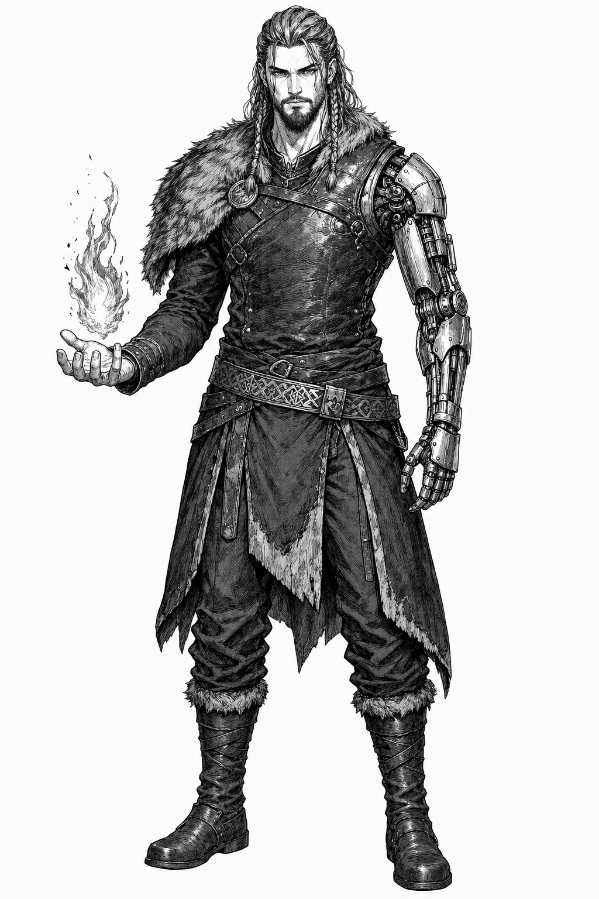
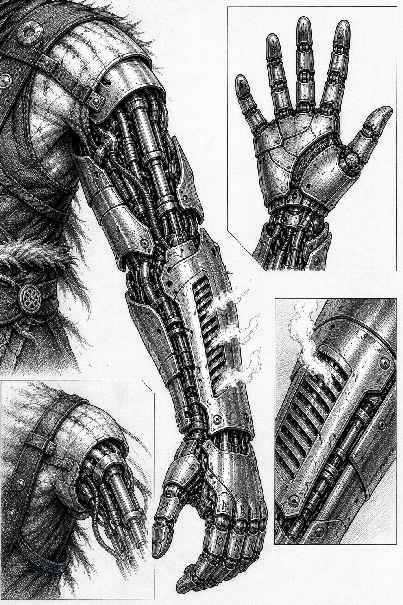
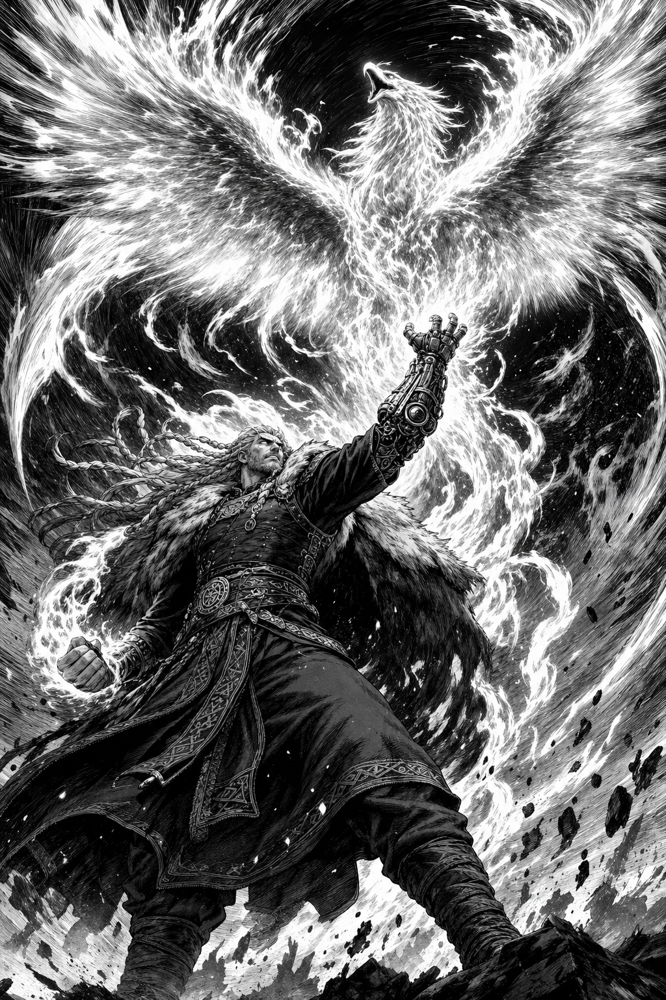

Artes para Análise — clique para ampliar



Ficha
- Nome
- Uriel
- Título
- O Braço de Ferro
- Altura
- 1,79m
- Compleição
- Definida e funcional — músculo de trabalho e combate, sem excesso de massa
- Estilo
- Guerreiro do norte: tranças laterais, barba aparada, pele de lobo no ombro, cinto gravado em runas
- Poder
- Fogo — conjurado pelo punho direito e regulado pelo braço mecânico
- Braço esquerdo
- Prótese mecânica integral: pistões, placas segmentadas e respiradouros de chama
História
Uriel veio das terras quentes da fronteira, onde o calor mata mais que a guerra. Cresceu entre trabalhadores esquecidos, aprendeu a lutar antes de aprender a ler, e descobriu o próprio fogo no dia em que precisou dele para não morrer.
O braço, ele perdeu. Como, ninguém sabe — e ele não conta. As versões variam: um incêndio que ele mesmo causou, um ritual que saiu do controle, uma dívida cobrada por alguém que não aceita moeda. A única certeza é que ele voltou do deserto com a prótese já instalada, feita de um metal que nenhum ferreiro reconhece.
Hoje atravessa o mundo como espada de aluguel — mas só aceita contratos que envolvam proteger quem não pode se proteger. Quem tenta contratá-lo para queimar uma vila descobre, rápido, por que o fogo dele nunca precisa de segunda chance.
Poderes
Punho de Brasa
Concentra calor no punho direito. O impacto funde rocha e verga aço forjado.
Custo: cada golpe rouba calor do próprio corpoRespiradouros
O braço mecânico absorve o excesso de calor e o expele pelas fendas — permitindo ataques em sequência que nenhum outro conjurador aguenta.
Custo: após três descargas, o braço precisa resfriarChama Concordante
O fogo de Uriel não explode — acompanha. Cercos, correntes de calor, muralhas de chama que não tocam aliados.
Custo: se a concentração quebra, o fogo escolhe sozinhoA Fênix
Invocação máxima: todo o calor acumulado no braço mecânico é liberado de uma vez, tomando a forma de uma ave de fogo colossal que obedece a um único comando antes de se dissipar.
Custo: esgota o braço por completo — depois dela, Uriel luta apenas com o corpoO Segredo
O metal do braço não enferruja, não congela e não responde a nenhuma magia conhecida. Nas noites mais frias, os dedos mecânicos se movem sozinhos — devagar, como se escrevessem algo numa língua que Uriel não lê. Ele começou a copiar os movimentos. E está procurando alguém que saiba o que significam.